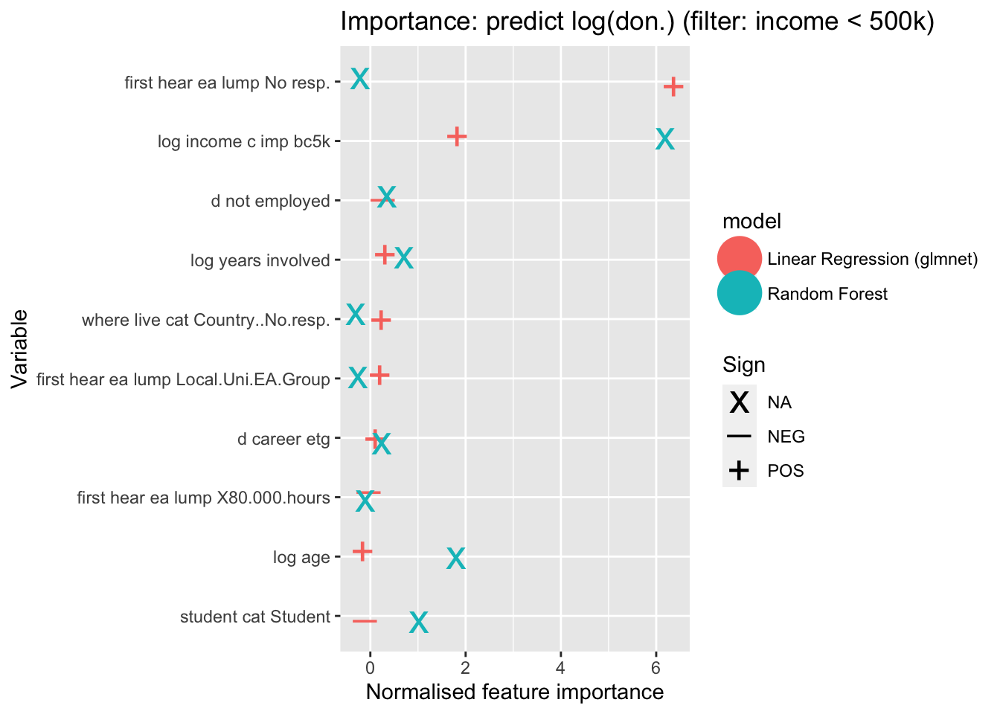
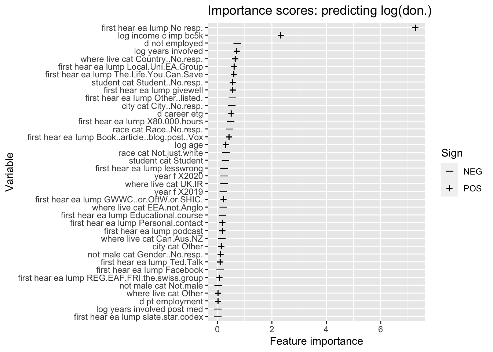

Code
df <- df %>%
labelled::remove_attributes("label") %>% # Labels don't work with tidymodels :/, sadly
ungroup() %>%
dplyr::sample_n(2000)This vignette shows how to use a set of Tidymodels tools and other tools, to do a machine learning prediction and validation exercise. We use the EA Survey ‘donation data’ for our example, covering much of the analysis that was done for the comparable section of the 2020 EA Forum post/chapter. Most of that code was written by Oska Fentem in consultation with David Reinstein. This vignette is written by David Reinstein.
I try to show:
See also: ‘Fitting Models with parsnip’
Reinstall key packages so this can be standalone?1
Skipping here, for now; this may help processing larger jobs, so we may want to revisit it.
cores <- parallel::detectCores()
if (!grepl("mingw32", R.Version()$platform)) {
library(doMC)
registerDoMC(cores = cores)
} else {
library(doParallel)
cl <- makePSOCKcluster(cores)
registerDoParallel(cl)
}The code below reads data in directly from the RP private github repo. You need to have authorization set up for this to work.2
Next we sample from this data and remove labels, to make it process quicker and easier
df <- df %>%
labelled::remove_attributes("label") %>% # Labels don't work with tidymodels :/, sadly
ungroup() %>%
dplyr::sample_n(2000)df# A tibble: 2,000 × 48
donation_usd don_av2_yr l_don_usd l_don_av_2yr don_share_inc_imp_bc5k
<dbl> <dbl> <dbl> <dbl> <dbl>
1 400 3200 5.99 8.07 0.04
2 916 824. 6.82 6.72 0.0159
3 2485. 2604. 7.82 7.87 0.0808
4 118. 266. 4.78 5.59 0.00833
5 36.7 55.1 3.63 4.03 0.00734
6 1400000 700000 14.2 13.5 1
7 1300. 1300. 7.17 7.17 0.0500
8 50 25 3.93 3.26 0.01
9 500 500 6.22 6.22 0.01
10 0 0 0 0 0
# … with 1,990 more rows, and 43 more variables: donation_plan_usd <dbl>,
# d_don_1k <fct>, d_don_10pct <dbl>, ln_years_involved <dbl>, year_f <fct>,
# ln_age <dbl>, not_male_cat <fct>, student_cat <fct>, race_cat <fct>,
# where_live_cat <fct>, city_cat <fct>, ln_income_c_imp_bc5k <dbl>,
# d_pt_employment <dbl>, d_not_employed <dbl>, d_top6_uni <fct>,
# d_gwwc_ever_0 <fct>, d_career_etg <dbl>, ln_years_involved_post_med <dbl>,
# ln_age_if_older <dbl>, ln_income_c_imp_if_richer <dbl>, income_c <dbl>, …Normally, we should do the main data manipulation steps separately from the analysis.3 However, if there are processing steps that are very specific to a modeling exercise, it seems OK to do them at this stage; but we should remain vigilant.4
First we remove columns with only missing values, to better focus on the interested data, and because this may mess up processing.5
# Remove variables (columns) that are all missing
df <- df %>% dplyr::select(where( ~!all(is.na(.x)) )) %>%
ungroup()Next, another ‘Big global filtering step’ … .6, 7
df <- df %>%
dplyr::filter(!is.na(d_don_1k))Next, I define an ‘optional filter’, which we may use below.8 income_filter will remove individuals with an income below 500000.9
income_filter <- quo(income_c_imp_bc5k < 500000)Specifying character vectors or list objects (or doing this in sourced scripts).
This usually includes…
Why ‘do this up top’? It makes it clearer what ‘all the messy code below does’, and it gives you ‘central control’, allowing you to change everything in one place. And you can also refer to these objects in many ways, including in inline text an in visualizations, to communicate what is being done.
Aside: The ‘choices of variables’ thing is more important in models based on a particular theoretical structure, where we have different sets of pre and post variables and are worried about ‘leakage’ … or where we are aiming at a causal interpretation and are worried about things like ‘bad controls/colliders’.
Finally, for factor variables, we set base categories to the most common values.10
df <- df %>% mutate(
across(where(is.factor), #note the `across(where...` means 'do the function for all columns where the condition holds, and change the value, keeping the column name constant'
~ forcats::fct_infreq(.x))) # here's the abbreviated notation for a function, with a tilde ... hte `.x` refers to the object that is the function argument, here a column (name)Before we start, we set a ‘seed’ so we get the same ‘random draw’ whenever we run this stuff.
seed <- 1
set.seed(seed)For ML modeling, we need to set aside some data to test our model’s ultimate performance. We thus split our data sets using the rsample package tools. 3/4 of data is used for ‘training’ (fitting the parameters of our model), and the rest for testing.11
init_split <- rsample::initial_split(df, prop = 3/4) #3/4 of data goes for training, rest for testinginit_split?
Typing it into the console just reports the counts of observations in the training and testing sets. If we look into its structure with init_split %>% str() we see a list of four things;
data is the dataframe itself,
in_id seems to keep an indexing record of the training data,
out_id is empty, and
id seems to keep track of ‘what this thing is’ (but I’m not sure)
Next, we assign the training data and testing data objects
train <- rsample::training(init_split)
test <- rsample::testing(init_split)I next create the ‘non-highest-income’ subset of the data, using the income_filter quosure object defined above to the testing and training data.12
train_filter <- train %>% filter(!!income_filter)
test_filter <- test %>% filter(!!income_filter)In the full model we compare both the unfiltered and filtered data. For simplicity, I’ll use only the latter here when considering the log donation outcomes.13
In a machine learning context, especially if we care only about prediction for its own sake, ‘more features (columns) always help’ … as long as these represent pre-outcome data and not a ‘leak’.
In standard econometrics ‘OLS’ approaches, we learn that including too many variables will worsen a model’s predictive power (out-of-sample fit). However, in ML contexts, to avoid this ‘overfitting’, we impose a Zpenalty’ on the (normalized) coefficient magnitudes (absolute value, squared or both). We also ‘tune’ this penalty to achieve the best performance in the cross-validation partitions. If this is done right, more columns can only help our predictive power, achieving the model that ‘predicts best out of sample’. However we need to be very careful in interpreting these coefficients; they are not ‘unbiased’, they may not have a causal interpretation, and statistical inference (standard errors, etc.) is also not straightforward.
So we do ‘regularization’ (‘trimming’, ‘penalization’, etc.) to avoid ‘overfitting’.
It seems to depend on the situation and structure of the data generating process. ML procedures try to compute the best-performing regularization ‘hyperparameters’ using the data. But (again because of the overfitting issue) we can’t judge the performance of an approach by predicting on the same data that it fit the model on. (And fitting on the set-aside test data would yield other ‘data leak’ problems.) N-fold cross-validation tries to get around this problem by splitting the data up into a number of partitions, fitting the model, with a certain tuning parameter, on ‘all but one fold’, and then testing it’s performance on that left-out fold.
This is iterated many times through different regularization specifications (hyper-parameters). The cross-validation results allow one to estimate ‘the level of regularization which provides the best out-of-sample predictive performance’.14
So, we use this n-fold cross-validation to ‘tune our hyperparameters’ to achieve the best tradeoffs between complexity and overfitting, to optimize our prediction. To enable this, we also need to define ‘folds’ to split up the training data, which we do below.
The rsample::vfold_cv function does this resampling (with a default of ten folds).15
cv <- rsample::vfold_cv(train) # 10 fold
cv_filter <- vfold_cv(train_filter)It creates ten partitions (data frames with some indexing objects and meta-data on the process).
cv# 10-fold cross-validation
# A tibble: 10 × 2
splits id
<list> <chr>
1 <split [1335/149]> Fold01
2 <split [1335/149]> Fold02
3 <split [1335/149]> Fold03
4 <split [1335/149]> Fold04
5 <split [1336/148]> Fold05
6 <split [1336/148]> Fold06
7 <split [1336/148]> Fold07
8 <split [1336/148]> Fold08
9 <split [1336/148]> Fold09
10 <split [1336/148]> Fold10And a single partition:
cv[[1,1]][[1]]
<Analysis/Assess/Total>
<1335/149/1484>Each of these partitions classes 90% of the data for ‘analysis’ and about 10% for ‘assessment’.
First I make a list of ‘right hand side’ (rhs) variables here,16 the columns being used in prediction, to shorten later code, avoiding duplication, and centralize things.17
rhs_vars <- c("ln_years_involved", "year_f", "ln_age", "not_male_cat", "student_cat", "race_cat", "where_live_cat",
"city_cat", "d_pt_employment", "d_not_employed", "d_career_etg", "ln_years_involved_post_med", "ln_income_c_imp_bc5k",
"first_hear_ea_lump")The choice of features is one of the most important things in doing any modeling or prediction exercise.
Suppose we were strictly doing this ‘how to fit a model to predict future outcomes’. Then I believe we should include all features that we expect to be able to observe in the future in the settings where we want to apply our model. Considering donations, maybe I would want to predict at the time someone first joins EA, how much they would donate a year later. Why? Perhaps to do some sort of budgeting, or perhaps if we were trying to select ‘whom to target’ with a particular promotion, or who to recommend to take a particular path and we expected that those who tend to donate more would respond better.
But this is not what we were trying to do here. We were aiming at different goals here, not prediction per se. See our discussion under Prediction models for insights?.
Essentially, I was looking to generate a set of useful strictly-data-driven insights about ‘what is important in predicting donations’, deriving non-rigorous implications from this. So I focused on a subset off features that seemed directly interesting or relevant (such as ‘earn to give career’) and others that seemed helpful interpreting this (like the year dummies).
I was somewhat thinking of this as a causal model, or at least I wanted to allow the possibility of causal interpretation. Thus the ‘Giving What we Can’ pledge was not included here, because this seemed to be too close to the outcome of interest (i.e., it seems to be a very strong collider).
Next we create three formula objects,18 each with the same set of rhs variables, but a different ‘outcome’ variable.19
Each of these outcomes has a different character:
l_don_av_2yr_f: a strictly positive continuous variable (log average donation)
don_share_inc_imp_f: donation as a share of (imputed) income, between 0 and 1
d_don_1k: A binary for ‘whether donated $1000 or more.’
These will suggest different modeling approaches and interpretations.
##Consider: -- Medium importance: Consider constructing this starting with lists defined in donations_20 and adding/subtracting things (but could this cause problems?)
l_don_av_2yr_f <- rethinkpriorities::make_formula("l_don_av_2yr", rhs_vars) #shortcut for stats::reformulate to make a formal out of rhs and lhs
don_share_inc_imp_f <- make_formula("don_share_inc_imp_bc5k", rhs_vars)
d_don_1k_f <- make_formula("d_don_1k", rhs_vars)These formulas look like …
l_don_av_2yr_fl_don_av_2yr ~ ln_years_involved + year_f + ln_age + not_male_cat +
student_cat + race_cat + where_live_cat + city_cat + d_pt_employment +
d_not_employed + d_career_etg + ln_years_involved_post_med +
ln_income_c_imp_bc5k + first_hear_ea_lumpetc.
As noted, in a machine learning context, especially if we care only about prediction for its own sake, ‘more features (columns) always help’. Thus, we try to fit a model that allows many, many variables, imputing these where there are missing values.20 This should get us the model that ‘predicts best out-of-sample’.21
For ML procedures to work, we often always need to standardize each continuous (predictor) column, subtracting its mean and dividing by its estimated standard deviation.22
Oska notes: This “really depends on the type of model, for very popular tree-based models standardization isn’t required.”
Recipe package: We can’t merely ‘do all the imputing and standardation on the full data set once.’ This would not yield valid metrics for our tuning because of the ‘data leakage’ issue. Because of the nature of the cross-validation procedure, we need to do the above steps separately for each iteration, imputing and standardizing using only the non-excluded observations in the partition (or ‘fold’).
In the code below, we define a function to do a series of pre-processing steps that seem appropriate for our case at hand.
preprocess_func <- function(formula, data = train){
require(recipes)
# Function to save time in creating recipes for different outcomes
#? Todo -- add to rethinkpriorities package
recipes::recipe(formula, data=data) %>% #formula is a 'y~x1+x2` thing, defining rhs and lhs variables
recipes::step_impute_median(all_numeric_predictors()) %>% #rem: replaces missing values with medians
# Create NA feature
recipes::step_unknown(all_nominal_predictors()) %>%
recipes::step_scale(all_numeric_predictors(), factor=2) %>% #the 2sd Gelman adjustment
#Removing because redundant: step_impute_mode(all_nominal_predictors(), -all_outcomes()) %>%
recipes::step_zv(all_predictors()) %>% #cut any predictors with zero variance
recipes::step_dummy(all_nominal_predictors())
}preprocess_func function defines a recipe that:
Next, in the code below, we apply the above preprocess_func to actually create the recipes.23
# Create recipes (defined above in preprocess_func) (with 'formulas') attached to data objects (default is 'train')
l_don_av_2yr_rec <- preprocess_func(l_don_av_2yr_f, data=train) #used preprocess_func to define a recipe
#`data=train` as a reminder that this is a data thing
don_share_inc_imp_rec <- preprocess_func(don_share_inc_imp_f)
d_don_1k_rec <- preprocess_func(d_don_1k_f)
l_don_av_2yr_rec_filter <- preprocess_func(l_don_av_2yr_f, data = train_filter)For example,
l_don_av_2yr_rec_filter <- preprocess_func(l_don_av_2yr_f, data = train_filter)
creates a recipe object that is summarized as
l_don_av_2yr_rec_filterRecipe
Inputs:
role #variables
outcome 1
predictor 14
Operations:
Median imputation for all_numeric_predictors()
Unknown factor level assignment for all_nominal_predictors()
Scaling for all_numeric_predictors()
Zero variance filter on all_predictors()
Dummy variables from all_nominal_predictors()We defined the data ‘environment’, the formula objects, and the ‘recipes’. Now we define the ‘ML models’, i.e., the procedures for ‘what sort of predictive models do we want to build, and how’?
A regression/decision tree is a rather simple approach, easy to understand and interpret. However, I suspect it is not great for prediction in our example here. IIRC it is dominated by the Random Forest approach. Thus, I skip it, for brevity.
Briefly, the random forest approach tries to predict outcomes through building a number of independent “trees”, and averaging over these.
I’m not going to explain this whole procedure here. We flesh this out a bit more here, but note others can do a better job of explaining it than us. Still, a few notes, possibly with incorrect terminology.
Just think of splitting up the data first by one category, then by another category. E.g., we could split it by gender, and then by income being over some threshold, to give us four categories or ‘leaf nodes’. For each category at the bottom of each tree (leaf node), you make a single prediction for the outcome variable. We try to build these trees in away so that there is as much homogeneity as possible within each leaf node, and as much difference between leaf nods as possible… So that our predictions are as good as possible. We fit this in a way that maximize its prediction power within the training sample, obviously, but subject to a ‘penalty for more branchings’ … with the goal of predicting well on data we didn’t use to fit the model.
How do you choose ‘what to split it by first’ and ‘then by what’? There are algorithms. Essentially, you try each variable and see which variable and which split of that variable reduces the “entropy” the most at a particular node.
Why might this approach be better than regression approaches? Trees seem to force you to use each feature rather bluntly, in a sequence of splits at single cutoff points only (for continuous variables). In contrast, regressions allow you to weigh a different features against each other and have different relative strengths. On the other hand, tree models seem to allow intricate patterns of interactions between different features in ways that would be difficult to accommodate in a regression model.
Above, I basically described the creation of an individual tree you could use to predict outcomes with. But it seems the creation of such trees is rather sensitive to initial conditions, and maybe it’s sensitive to the particular date are you are using to fit the model. Random forest does something like… “build a bunch of tree models and average them”. But you can’t build a bunch of different independent tree models unless you make some restrictions to each one, so for each tree it randomly samples a set of features from the full set, and leaves others out of the model.
Below, we define rf_model_reg as a parsnip object.
rf_model_reg <- parsnip::rand_forest(
mtry = tune(), #number of predictors to randomly sample at each 'split'
#trees = tune(), #how many trees in the 'ensemble'
trees = 50, #how many trees in the 'ensemble'
min_n = tune()) %>%
parsnip::set_engine("ranger", importance = "impurity") %>%
parsnip::set_mode("regression")We specify,
mtry = tune(): How many predictors should we randomly sample for each split (tree?). We set this to tune; that means we allow the cross-fold validation process to tell us what seems to work best.
We also set it to ‘tune’: - min_n: how few observations each (leaf) node is allowed to contain
We normally would also tune the
trees: how many trees in the ‘ensemble’ (the ‘forest’?) … but here I set it to only use 50 trees to save processing time … for this exampleThis is simply a regression approach with ‘penalization’ or ‘shrinkage’ … but done in a sophisticated way.
The GLMnet approach combines ‘ridge (L2 norm) and lasso (L2 norm)’, tuning the mix of each, as well as tuning the penalization parameters within each.
We discuss this further under ‘penalized regression models’ in our machine learning modeling section.
linear_model_reg <- linear_reg(penalty = tune(),
mixture = tune()) %>%
set_engine("glmnet")In the code above, we define the linear_model_reg linear_reg object. We specify the ‘engine’ we use, and, as noted, that we are using cross-validation tuning to determine how much to penalize coefficient sizes overall, and for each norm (with what ‘mixture’ of L1 and L2 norms).
Next we make a list of both of the above defined ‘regression models’
# Create list of 'regression models' (i.e., continuous outcomes)
regression_models <- list(random_forest = rf_model_reg,
linear_reg = linear_model_reg)We do the same as above, but defining the models/modeling procedures for ‘classification models’, i.e., for those cases where we have a non-continuous outcome; in our case ‘whether they donated 1000 USD or more`. We define a random forest ’classification’ as well as an elastic net version of a logistic (logit) model, and then a list combining both.s
# Random forest model
rf_model_class <- rand_forest(mtry = tune(), #number of predictors to randomly sample at each 'split'
trees = tune(), #how many trees in the 'ensemble'
min_n = tune()) %>%
set_engine("ranger", importance = "impurity") %>%
set_mode("classification")# Logistic regression
logistic_model_reg <- logistic_reg(penalty = tune(),
mixture = tune()) %>% #DR, @OS -- what is the 'mixture' here? -- is it a mixture of L1 and L2 norms (ridge and lasso?)
set_engine("glmnet")classification_models <- list(
random_forest = rf_model_class,
logistic_reg = logistic_model_reg)A workflow is an object that can bundle together your pre-processing, modeling, and post-processing requests.
This should make the flow ‘tidy’ and the output easy to use (I hope this becomes obvious below). 25
Next, we create a workflow set for the ‘log of 2 year averaged donation’ outcome (with the income filtered data):26
#pre-step ... not sure how it works
rf_params <- tune::parameters(rf_model_reg) %>%
recipes::update(mtry = mtry(c(0, nrow(d_don_1k_rec$var_info)-1)))
#Note that 'mtry' is 'number of sampled predictors'
l_don_av_2yr_wf_filter <-
workflow_set(
preproc = list(preprocess = l_don_av_2yr_rec_filter),
#'preprocessing objects' ... here 'recipes'
models = regression_models) %>% #'parsnip model specifications'
option_add_parameters() %>% #'adds a parameter object to the 'option' column'
option_add(param_info = rf_params, #this is the restriction defined above
id = "preprocess_random_forest")
#'add options saved in a workflow set' esp in the 'option column'
l_don_av_2yr_wf_filter# A workflow set/tibble: 2 × 4
wflow_id info option result
<chr> <list> <list> <list>
1 preprocess_random_forest <tibble [1 × 4]> <opts[1]> <list [0]>
2 preprocess_linear_reg <tibble [1 × 4]> <opts[1]> <list [0]>l_don_av_2yr_wf_filter$info[[1]]
# A tibble: 1 × 4
workflow preproc model comment
<list> <chr> <chr> <chr>
1 <workflow> recipe rand_forest ""
[[2]]
# A tibble: 1 × 4
workflow preproc model comment
<list> <chr> <chr> <chr>
1 <workflow> recipe linear_reg "" This has a lot of ‘stuff in it’. We give it the preprocessing recipe l_don_av_2yr_rec (and the formula?) as discussed above, and the set of modeling procedures we defined under regression_models,
We do similarly for the ‘donate over 1k’ binary outcome and associated modeling approach.27
d_don_1k_wf <-
workflow_set(
preproc = list(preprocess = d_don_1k_rec),
models = classification_models) %>%
option_add(param_info = rf_params, id = "preprocess_random_forest")We have a large space to explore. We use ‘Bayesian optimization’, presumably, for the tuning parameters only, i.e., the combinations of ‘hyper-parameters’ (the penalization parameters). It iterates towards what seems to be an optimum (maximum posterior?) in this ‘structured space’. This is claimed to be “quicker than grid search and more effective than random search.”
Note that the underlying procedures are not Bayesian (as far as I know). We are not assigning a prior over (e.g.) the coefficients/‘weights’ on the variables/features in the linear models. Conditional on the tuning parameters are computed according to a simple algorithm (linear models: minimized least squares subject to the penalization, or some such).
Options for Bayesian optimization (for tuning parameters?)
bayes_ctrl <- control_bayes(parallel_over = "everything",
verbose = TRUE,
# no_improve = 1,
save_pred = TRUE,
save_workflow = TRUE,
seed = seed)
#max_iter <- 30
max_iter <- 4Normally we would set a large number of iterations, but as this is a vignette we set it to 4 iterations only. It still takes a few minutes.28
We now ‘map the workflow’ to actually estimate the model, using workflow_map.
It takes the workflow object (below l_don_av_2yr_wf) and ‘runs the function’, here …
tune_bayes() uses models to generate new candidate tuning parameter combinations based on previous results.
l_don_av_2yr_results_filter <- l_don_av_2yr_wf_filter %>%
workflow_map("tune_bayes",
seed = seed,
resamples = cv,
iter = max_iter,
# metrics = metric_set(mae),
control = bayes_ctrl) #'control' how the function worksSorry for all the output above … that is because we set verbose=TRUE. It is considering the tuning parameters to minimize root-mean-squared error of the prediction. The random forest seems to swing widely in some dimensions, e.g., first considering about 400 trees, then 4 tree. then a few hundred trees again. It probably needs more iterations to really converge.
The elastic net also seems to have substantially adjusted (reduced) the level of penalization over these few iterations, and moved much more towards the ridge approach (L2 norm) and away from the lasso (L1).
We next fit the models with binary (1k donation) outcome, for the random forest and logistic regression ‘classifiers’.
bayes_ctrl$verbose <- FALSE
d_don_1k_results <- d_don_1k_wf %>%
workflow_map("tune_bayes",
seed = seed,
resamples = cv,
iter = max_iter,
control = bayes_ctrl)Random forest:
i Current best: roc_auc=0.8441 (@iter 2)
i Gaussian process model
i Generating 4994 candidates
i Predicted candidates
i mtry=8, trees=106, min_n=40
i Estimating performance
Newest results: roc_auc=0.8424 (+/-0.00992)Logistic Elastic net:
i Current best: roc_auc=0.852 (@iter 2)
i Gaussian process model
i Generating 5000 candidates
i Predicted candidates
i penalty=1.75e-06, mixture=0.605
Estimating performance
Newest results: roc_auc=0.8474 (+/-0.0087)Above (pasted into fold) the iterations are tuning the parameters, as in the ‘regression’ models. Here they focus on a classification measure called the ‘area under the receiver operating curve’; 0 is worst and 1 is best.29
So we fit a bunch of models and we have some workflow set/tibble objects. Now what do we do with them?
We may want to
Assess their performance on the testing data (set aside)
“Interpret them” (Carefully! This can be dangerous/misleading.)
Use them for actual prediction and ‘profit’ when we have future data30
To enable 1 and 2, we do some cleanup and renaming below.31
# Char vector for renaming of models from workflowset defaults (for display)
pred_model_names <- c(
"preprocess_random_forest" = "Random Forest",
"preprocess_linear_reg" = "Linear Regression (glmnet)",
"preprocess_logistic_reg" = "Logistic Regression (glmnet)")
rename_metrics <- c("Workflow" = "wflow_id",
"Iteration" = ".config",
"Iteration Number" = ".iter",
"Preprocessing" = "preproc",
"Model" = "model",
"Metric" = ".metric",
"Estimator" = ".estimator",
"Mean" = "mean",
"N" = "n",
"Standard error" = "std_err")
rename_models <- function(df, new_names = pred_model_names){
df <- df %>%
mutate(model = stringr::str_replace_all(model, pred_model_names))
return(df)
}Next we use the best_wflow_preds_vi helper to extract the ‘optimized’ parameters and values from the above workflow set/tibble objects, and generate some metrics of fit with the appropriate training data.
l_don_av_2yr_best_params_filter <- best_wflow_preds_vi(l_don_av_2yr_results_filter,
outcome_var = "l_don_av_2yr",
train_sample = train_filter,
test_sample = test_filter)
d_don_1k_best_params <- best_wflow_preds_vi(d_don_1k_results,
outcome_var = "d_don_1k",
classification = TRUE,
metric = "roc_auc")Error in `is_metric_maximize()`:
! Please check the value of `metric`.The ‘vi’, a measure of ‘variable importance’, may be an object of particular interest:
d_don_1k_best_params$viError in eval(expr, envir, enclos): object 'd_don_1k_best_params' not foundFor the random forest model we can’t give a ‘sign’ because each variable enters in a complicated way … at lower nodes across multiple averaged trees.
We want to know how good our models are predicting the training data (the data that was not used to fit these models). We may want to consider ‘how successful’ our predictive models are at making practically useful predictions. In other words, ‘how far off’ are the predictions and classifications on average, from the actual outcomes. This procedure considers the fit on randomly-drawn set-aside ‘testing data’, data that has not been used in ‘training’ (or ‘fitting’) the model. Below, we consider some commonly-used metrics.
For the continuous outcomes we consider the ‘regression metrics’, and define these in a list below.
regress_metrics <- list(rmse = yardstick::rmse_vec,
mae = yardstick::mae_vec)For the binary (or categorical outcomes we consider a range of ’classification metrics32
class_metrics <- list(accuracy = yardstick::accuracy_vec,
recall = yardstick::recall_vec,
precision = yardstick::precision_vec,
f1_score = f_meas_vec)First we define a little helper function to help calculate the performance metrics.
calculate_metrics <- function(df, metrics, preds = preds, true_y = true_y){
df %>% mutate(purrr::map2_dfr({{true_y}}, {{preds}},
~ purrr::map_dfc(
metrics,
do.call,
list(.x, .y))))
}Next, we apply it to the fit models tied to the training data:
l_don_av_2yr_best_params_filter <- l_don_av_2yr_best_params_filter %>%
mutate(across(c(preds, true_y), ~map(.x, exp))) %>%
calculate_metrics(regress_metrics)
d_don_1k_best_params <- calculate_metrics(d_don_1k_best_params, class_metrics)Error in mutate(., purrr::map2_dfr({: object 'd_don_1k_best_params' not foundNote that for the continuous outcomes, we first converted from logs to levels before calculating RMSE and MAE
Some tidying up and renaming below. ::: {.cell}
# Change model names
d_don_1k_best_params <- rename_models(d_don_1k_best_params)Error in mutate(., model = stringr::str_replace_all(model, pred_model_names)): object 'd_don_1k_best_params' not foundl_don_av_2yr_best_params_filter <- rename_models(l_don_av_2yr_best_params_filter):::
recode_params <- function(df){
# Shortcut function to tidy up variable names in parameter df
df <- df %>% dplyr::select(model, vi) %>%
tidyr::unnest(vi) %>%
mutate(model = str_replace_all(model,
c("preprocess_" = "", "_" = " ")),
#Variable = str_replace_all(Variable, key_eas_all_labels),
Variable = str_replace_all(Variable,
c("_" = " ", "_Student" ="", "ln" = "log")),
Sign = if_else(is.na(Sign), "NA", Sign))
}
# Tidy up parameters
l_don_av_2yr_best_params_recode_filter <- l_don_av_2yr_best_params_filter %>%
#filter(is.na(filter_name)) %>%
recode_params
d_don_1k_best_params_recode <- d_don_1k_best_params %>% recode_paramsError in dplyr::select(., model, vi): object 'd_don_1k_best_params' not foundIn order to assess the usefulness of each predictive regression model we consider both root-mean-square-error (RMSE) and mean-absolute-error (MAE).
RMSE (aka RMSD) can be interpreted as the average ‘Euclidean distance’ between the actual values and the model’s prediction. For each observation (in the set-aside ‘testing sample’), to construct RMSE we:
To construct mean-absolute-error (MAE) we simply
MAE has a much more straightforward interpretation: it simply asks ‘how far off are we, on average?’
While the RMSE is used in the model fitting for various reasons, it is arguably less-interpretable and less-relevant than MAE in judging the model’s fit in cases like this one. RMSE error negatively assesses the model fit based on squared deviations, and is thus very sensitive to ‘large mistakes’. This may be relevant where ‘large errors are much much worse than small ones’ – here, this is not so clearly the case. In the presence of data with large outlying observations, prediction will tend to be poor by this measure.
Transformations: Note that when considering models where the outcome is transformed (e.g., log(donations)) we construct the RMSE and MAE by exponentiating to generate predictions for the level outcomes, and then measure the deviations on the level scale.35
l_don_av_2yr_best_params_filter <- l_don_av_2yr_best_params_filter %>%
mutate(dv = "Donation amount*")
(
reg_model_performance <- purrr::map(list(l_don_av_2yr_best_params_filter), ~.x %>%
dplyr::select(dv, rmse, mae, model)
) %>%
bind_rows() %>%
rename("Dependent variable" = dv,
"RMSE" = rmse,
"MAE aka MAD" = mae,
"Model" = model) %>%
kable(caption = "Regression model performance",
digits = 2) %>%
kable_styling() %>%
add_footnote("Note: While the model was trained using logs of the dependent variable, RMSE and MAD/MAE were calculated in levels", notation = "symbol")
)Error in add_footnote(., "Note: While the model was trained using logs of the dependent variable, RMSE and MAD/MAE were calculated in levels", : could not find function "add_footnote"p_load(ie2misc)
The downloaded binary packages are in
/var/folders/nh/gsssbvt5463b77hrh0_gtmnh0000gq/T//Rtmp6X4W8u/downloaded_packagesmad_naive <- ie2misc::madstat(df$donation_usd, na.rm=TRUE)
sd_naive <- round((sd(df$donation_usd, na.rm=TRUE)), 0)How does this compare to a ‘naive model’ in which we predict the average donation for everyone? Note that for the comparable unfiltered data, the mean absolute deviation is 1.6572072^{4} and the standard deviation37 is 1.39859^{5}. The predictive model reduces this uncertainty substantially.
There are a variety of metrics for the performance of a classifications model; I discuss the basic concepts of precision, recall, and the ROC curve here. The ‘performance of a classifier’ is not easy to reduce to a single number; it depends on how you are going to use it, and on the relative the costs and benefits of each type of classifications error
The ROC curve allows us to compare the predictive power of the various models, and to compare it to an uninformed classifier38
# Add column for ROC curve
roc_curve <- yardstick::roc_curve
unnest <- tidyr::unnest
pr_curve <- yardstick::pr_curve
# Calculate ROC curve
d_don_1k_best_params$roc_curve <- d_don_1k_best_params %>% select(true_y, preds, pred_prob, model) %>%
unnest(cols = everything()) %>%
group_by(model) %>%
group_map(~ roc_curve(., true_y, .pred_FALSE))Error in select(., true_y, preds, pred_prob, model): object 'd_don_1k_best_params' not found# Calculate AUC
d_don_1k_best_params$auc <- d_don_1k_best_params %>% select(true_y, preds, pred_prob, model) %>%
unnest(cols = everything()) %>%
group_by(model) %>%
group_map(~ yardstick::roc_auc(., truth = true_y, estimate = .pred_FALSE))Error in select(., true_y, preds, pred_prob, model): object 'd_don_1k_best_params' not found# Extract AUC
d_don_1k_best_params <- d_don_1k_best_params %>%
unnest_wider(., col = auc) %>%
select(-c(.metric, .estimator)) %>%
rename(auc = .estimate)Error in is.data.frame(data): object 'd_don_1k_best_params' not found# Plot ROC curve
(roc_curve_d_don_1k <- d_don_1k_best_params %>% select(roc_curve, model) %>%
unnest(cols = everything()) %>%
rename_with(snakecase::to_title_case) %>%
ggplot(aes(x = 1-Specificity, y = Sensitivity, colour = Model)) +
geom_line() +
geom_abline(slope=1, intercept = 0, linetype = "dotted") +
theme_bw()
)Error in select(., roc_curve, model): object 'd_don_1k_best_params' not foundAn ROC curve plots the true positive rate (sensitivity) as a function of the false positive rate (1-specificity). Here the true positive rate gives the rate at which our model correctly predicts a respondent to donate over $1000, with the false positive rate giving the rate at which these predictions are incorrect.
Better classifiers will have an ROC curve that is further North-West, with the perfect classifier being an L-shaped curve passing through \((0,0) \rightarrow(0,1) \rightarrow(1,1)\). Where classifiers ROC curves do not cross, it is clear that one will be performing better than another. That is not the case here. Both models seem to be performing relatively similarly, with the ROC curves overlapping somewhat. It is difficult to discern which model is performing the best, and this will depend on our criterion.
However, both models yield curves substantially above the 45 degree line, thus substantially outperforming an uninformed classifier. For example, if we are willing to accept about a 25% rate of false positives (falsely predicting a 1k+ donation), the logistic regression model correctly predicts about 75% of true positives (and the random forest model about 73%).
We can use the area under the curve (AUC) measure to compare classifiers for all costs of misclassification. This is one measure of ‘how close the ROC curve is to the optimal L-shaped curve.’
calculate_metrics <-
function(df,
metrics,
preds = preds,
true_y = true_y) {
df %>% mutate(purrr::map2_dfr({
{
true_y
}
}, {
{
preds
}
},
~ purrr::map_dfc(metrics,
do.call,
list(.x, .y))))
}
class_metrics <- list(accuracy = yardstick::accuracy_vec,
recall = yardstick::recall_vec,
precision = yardstick::precision_vec,
f1_score = yardstick::f_meas_vec)
# Adding a no skill classifier to d_don_1k
## Messy code
truth <- d_don_1k_best_params$true_y[[1]]Error in eval(expr, envir, enclos): object 'd_don_1k_best_params' not foundmajority <- tail(names(sort(table(truth))), 1)Error in h(simpleError(msg, call)): error in evaluating the argument 'x' in selecting a method for function 'tail': object 'truth' not foundpred_majority <- as.logical(rep(majority, length(truth)))Error in eval(expr, envir, enclos): object 'majority' not found.pred_FALSE <- 1 - pred_majorityError in eval(expr, envir, enclos): object 'pred_majority' not found.pred_TRUE <- 1 - .pred_FALSEError in eval(expr, envir, enclos): object '.pred_FALSE' not foundpred_prob <- tibble(.pred_FALSE, .pred_TRUE, truth)Error in eval_tidy(xs[[j]], mask): object '.pred_FALSE' not foundno_skill <- tibble(model = "No Skill",
true_y = list(truth),
pred_prob = list(pred_prob),
preds = list(factor(pred_majority, levels = levels(truth)))) %>%
calculate_metrics(class_metrics)Error in eval_tidy(xs[[j]], mask): object 'truth' not foundno_skill$auc <- yardstick::roc_auc_vec(truth, .pred_TRUE)Error in is_multiclass(x): object 'truth' not foundpurrr::map_df(list(no_skill, d_don_1k_best_params), ~.x %>%
select(model, auc, accuracy)) %>%
rename_with(snakecase::to_title_case) %>%
rename(AUC = Auc) %>%
kable(digits = 3) %>%
kable_styling()Error in kable_styling(.): could not find function "kable_styling"Here the tuned logistic regression performs better in terms of the AUC metric, and both perform much better than the no-skill classifier.
plot_vi <- function(df, shapes = shape_colours){
# Shortcut function for plotting normalized variable importance (output of norm_vi)
df %>% ggplot(aes(y = Variable, x = Norm, colour = model, shape = Sign)) +
scale_shape_manual(values = shapes) +
geom_point(size = 4, stroke = 5) +
xlab("Normalised feature importance") + ylab("")
}
#specific changing of variable and signs for the below.
mutate_labels_sign_snip <- function(df) {
df %>%
mutate(
Variable = str_replace_all(Variable,
c("First-heard EA"="Heard EA:",
"response" = "resp.",
"Gender Gender" = "Gender",
"unknown" = "No resp.",
"Student Student" = "Student",
"X80000" = "80000")),
Sign = if_else(is.na(Sign), "NA", Sign)
)
}
# Set colors for shapes as a named vector
shape_colours <- c("NA" = 120, "NEG" = 95, "POS" = 43)Below, we plot the variable importance.
(
iplot_l_don_av_2yr_best_params_filter <-
l_don_av_2yr_best_params_recode_filter %>%
filter(!grepl("tree", model, ignore.case = TRUE)) %>%
norm_vi(slice_top = 10) %>%
mutate_labels_sign_snip %>%
slice_max(Total_Norm, n = 10) %>%
mutate(Variable = fct_reorder(Variable, Norm)) %>%
ggplot(aes(y = Variable, x = Norm, colour = model, shape = Sign)) +
scale_shape_manual(values = c(120, 95, 43)) +
geom_point(
position = position_jitter(seed = 42, width = 0.1, height = 0.1),
size = 4, stroke = 5) +
xlab("Normalised feature importance") +
ggtitle("Importance: predict log(don.) (filter: income < 500k)")
)
Above, we report the ‘importance scores’ for the ten most important features (‘variables’) for two distinct approaches to predicting log (average) donation.42
These importance scores are technically defined here. For the elastic net (“linear reg”) approzach, we depict the coefficients’ signs with a “+” or “-”; for tree/forest-based modeling this is less straightforward.
Income (normalized, bottom-coded at 5000 USD, and logged) is the most important predictor for each model, by a wide margin. After this, the relative importances vary.43
We next focus specifically on the elastic-net regression-based model.
(
enet_coefs_ldon <- l_don_av_2yr_best_params_recode_filter %>%
filter(
grepl("regression", model, ignore.case = TRUE) & Importance!=0) %>%
mutate_labels_sign_snip %>%
#mutate(Norm = scale_var(Importance)) %>%
mutate(Variable = fct_reorder(Variable, Importance)) %>%
ggplot(aes(y = Variable, x = Importance, shape = Sign)) +
scale_shape_manual(values = c(95, 43)) +
geom_point(size = 2, stroke = 4) +
xlab("Feature importance") +
ggtitle("Importance scores: predicting log(don.)")
)
The graph above presents the overall ranking of importance scores within the elastic-net linear regression model, with symbols depicting whether these features take on a positive or negative sign.
(
iplot_don_1k_best_params <- d_don_1k_best_params_recode %>%
filter(!grepl("tree", model, ignore.case = TRUE)) %>%
mutate_labels_sign_snip %>%
norm_vi(slice_top = 10) %>%
plot_vi() +
ggtitle("Importance scores: predicting donation > 1k USD ")
)Error in filter(., !grepl("tree", model, ignore.case = TRUE)): object 'd_don_1k_best_params_recode' not foundAgain, both approaches deem (logged, imputed, bottom-coded) income to be the most important predictor of donating 1k USD or more.
Note: not all these packages may be needed; let’s search only the ones that are and drop the rest↩︎
Note this data was already edited in an analysis file – we should move that over to one of the R ‘build files’↩︎
In the present case this would be in build/eas_cross_year_harmonisation.R.↩︎
Furthermore, data-based imputation and standardizing variables must be done later, at the modeling stage; we do this with the recipe package below.↩︎
However, this is a case where this ‘might as well have been done at the ’build the data’ stage … so I’ll move it there.↩︎
This should remove any people who did not answer the donation question… on which (all our) outcome variables are based. But actually, something is weird here – it removes very few observations, so I’m not sure what is going on, need to doublecheck it↩︎
Of course, as the decision to answer the donation question is nonrandom, this is not uncontroversial. There may be some selection issues here. Alternate models could consider, e.g., 1. Non-responses as zeroes, 2. The binary outcome ‘reported a positive donation’, 3. Some explicit selection model.↩︎
I define this ‘filter object’ using fancy ‘quosure’ syntax here, rather than actually creating another slice of the data as an object. I did this to avoid clutter in the environment while still making a clear definition up top.↩︎
income_c_imp_bc5k actually does a particular imputation for missing or near-zero incomes. I use this imputed variable here for consistency, but it is not important here, as we are removing the highest income people only.↩︎
This could have been done in the building process, but different procedures and reporting may want to use these categories differently, so it’s OK to do it “in the moment” here.↩︎
Why this particular split? I’m not sure, maybe it’s a rule of thumb.↩︎
Consider: in some cases we might want to filter before making training/test, but there are pros and cons.↩︎
Why this filter? I suspected that our methods may be sensitive to outliers, particularly with some of the functional forms. I could instead try to adjust the method of course, considering the real criteria of interest. This may be just an interim solution.↩︎
This may not always be necessary. There are some claims that [Oska … ref?]
↩︎if you specify good defaults for hyperparameters, then optimizing via randomised search/Bayesian opt or grid search is likely to only net a very minor performance improvement. For more complex methods (NN’s) it definitely isn’t worth trying to optimise parameters this way and is much better to think properly about good parameters/parameter ranges
Why ten? Maybe that’s a conventional rule of thumb? Oska: This seems to be standard in ML, in cases where leave-one-out cross-validation isn’t feasible (which is most of the time).↩︎
I previously labeled these control_vars. But ‘control variables’ has a particular meaning in the context of causal inference and interpretation. In other work that is aiming at causal interpretation, I separate control_vars from the key variable of (causal) interest. But here ‘they are all equal’ so I just call it rhs_vars. “Right hand side variables” obviously refers to the position on the right hand side of a stated modeling equation.↩︎
I know I said this is good to do ‘at the top’, but this is the part where we are starting to actually get into the modeling, so it seems OK.↩︎
It might be more tidy to do this by inputting a list of outcome variables too, and generating a list of formulas to use later. Leaving this as a ‘to do’.↩︎
make_formula uses stats::reformulate to collapse lists into a formula object.↩︎
Imputing them based on non-leaky variables only, of course, not based on any post-outcome measures.↩︎
But once again, we need to be very careful in interpreting these coefficients.↩︎
This is basically because we need to ‘penalize each coefficient fairly’. Note that we can also divide by any scalar for interpretation, as long as we do this the same for all columns. This comes up later. (This may only be the case for regression-based approaches.)↩︎
Note that this is still not modifying any data, as we are not applying the recipes yet.↩︎
set_mode("regression") indicates that the outcome is continuous, rather than ‘classification’, I believe. I am not sure what exactly the set_engine options mean here.↩︎
While we tend to do only ‘one of each thing’ below (a single recipe step tied to a single modeling step), the package is designed to enable lists of each, to enable all, or some combinations to be produced. See the authors’ vignette here↩︎
Also, as a preparation for this we ‘fit random forest parameter ranges to data’. I am not conpletely sure what is going on here. We should also find a cleaner way to do this.↩︎
I will skip the ‘donation share’ outcome here for brevity↩︎
I wonder if there is a way to speed it up further, for demo purposes. It generates a lot of ‘candidates’ – maybe this can be reduced.s↩︎
This considers both types of error (false negatives and positive; i.e., precision and recall). This metric equals with the area above the diagonal in a plot of the true positive rate against the false positive rate. For the elastic-net, it looks like the penalization rate is extremely low; I would want to dig more deeply into this.↩︎
We could also use them for loose predictions for hypothetical scases or groups of people we expect to have certain characteristics.↩︎
To save time in later work, we might try to build a function or something to automatically rename this stuff.↩︎
I discuss these issues at length here. However this is a fairly mainstream topic, and thereare a range of other, more precise or more intuitive discussions throughout the web.↩︎
1 - the rate of false negative↩︎
1- rate of false positive↩︎
When considering predicted outcomes on the logarithmic scale, both RMSE and MAE indicate roughly ‘how many exponential orders of magnitude our predictions for the non-logged outcomes are off. E.g., a MSE of 1.5 for ’log donation’ suggests an we are off by about \(exp(1.5) =\) 4.48 times in terms of donations, getting them off by a factor of about 5. This conversion avoid such complications.↩︎
Code note: I am using a purrrr:map below but I think it is pointless because it is a ‘list of 1’ … I previously had also included the donation share models ↩︎
I.e., the ‘standard error’ of a model that predicts the mean every time↩︎
which would simply predict a positive outcome with some random probability \(p\); thus this maps out the 45 degree line.↩︎
Note: the code below is a bit messy; we can probably do better or use some existing package.↩︎
Some renaming/recoding and helper functions in the code below:↩︎
adding content from modeling_vignettes/based_off_of/donations_20.Rmd↩︎
Note that (as is common in machine learning modeling) all features have been normalized to be on the same scale; for continuous features such as age and income we take the natural log of each, and divide each by two standard deviations of the logged feature, following @gelmanScalingRegressionInputs2008.↩︎
Note that ‘student category non-response’ is the second most important predictor in the linear model. This doesn’t seem to have a clear interpretation, but including this may help us better interpret other features like student status. To the extent that it is predictive, we might also expect it to be predictive in future cases, and it should go into useful predictions. On the other hand this non-reporting isn’t the sort of feature we could apply to predictions and policy judgements for broad groups in the wild, absent a similar survey. We can’t say “let’s target our program to people who are unlikely to indicate student status in a survey’. … We might expect non-response to be associated with lower engagement, and perhaps lower donation rates. However, we are considering non-responses to particular questions among those who did report a donation amount.↩︎